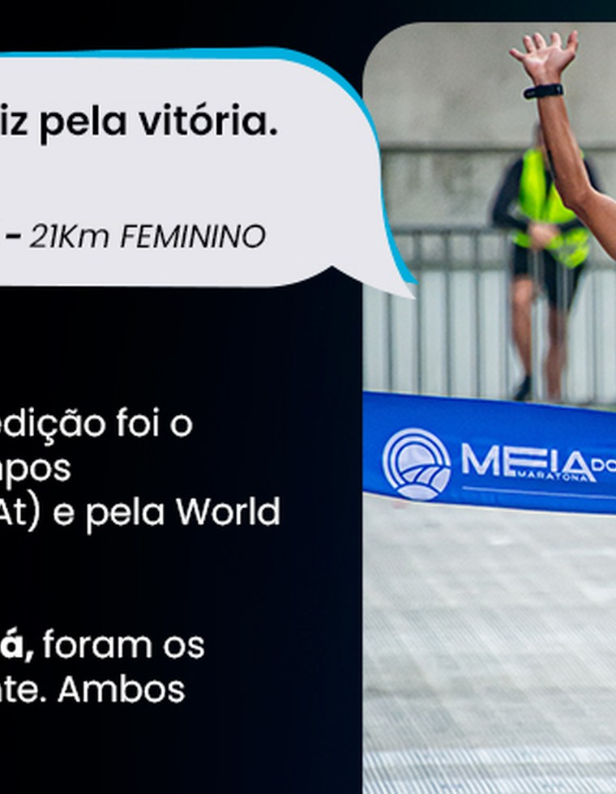
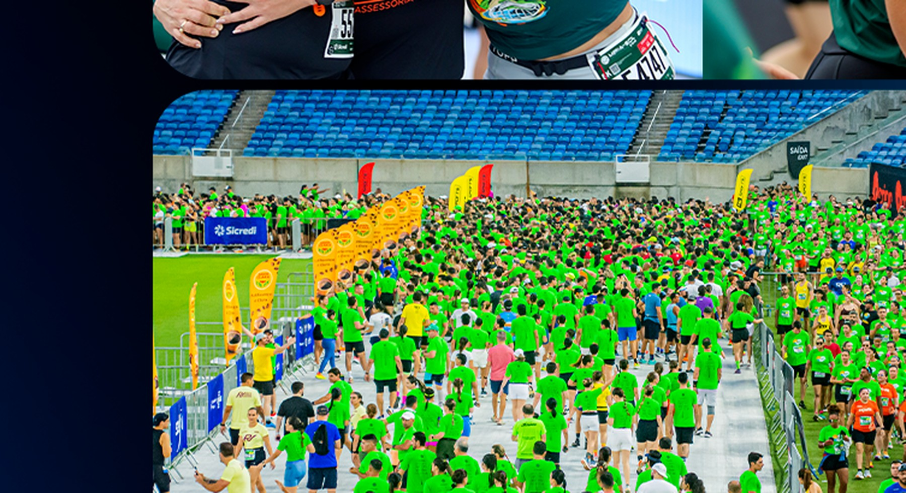
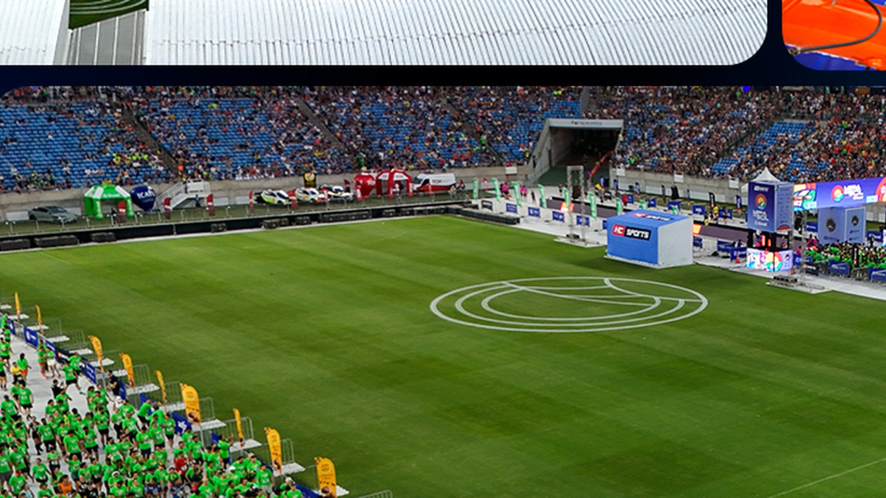
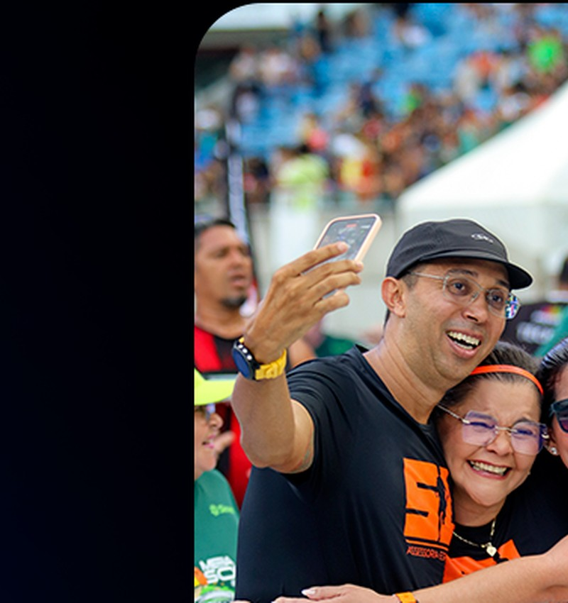
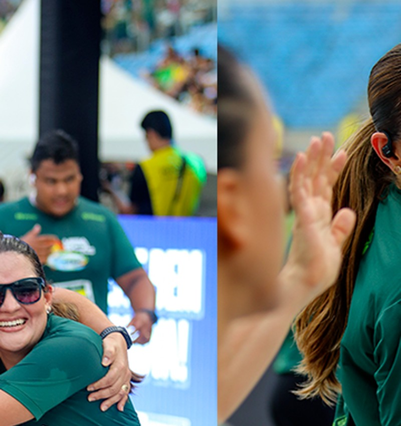
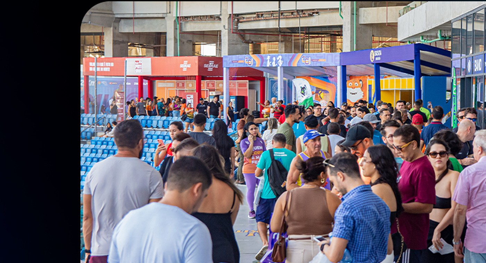
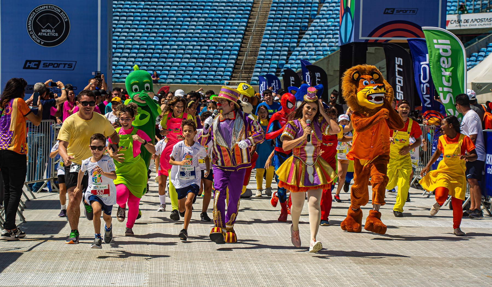

A chegada
“Foi minha primeira vez em Natal. No próximo ano estarei aqui novamente.”
Pedrina · campeã 21K feminino

Dois dias para transformar treino em memória. Um estádio de Copa, Natal em movimento e uma chegada que muda a pergunta de “será que eu consigo?” para “qual é o próximo?”.
Você não corre 21,097 km no dia da prova.
Você começa meses antes.
E termina diferente.
A distância não é só um número. Ela representa o estágio atual da sua jornada. Escolha uma prova e veja a experiência se reorganizar ao redor do seu objetivo.
A prova que dá nome ao evento. Técnica, emocional e inesquecível.

A Meia do Sol acontece em camadas: estádio, cidade, música, feira, família e performance. O site deve revelar essas camadas na mesma ordem em que o atleta começa a desejá-las.
Palco da largada, chegada, Expo e memória coletiva.
ExplorarQuando a cultura potiguar corre ao lado do atleta.
Destination running: viajar também faz parte da prova.
O encontro entre corredores, marcas, conteúdo e negócios.
ConhecerO percurso deixa de ser apenas um mapa técnico e passa a criar antecipação. O atleta reconhece marcos, entende a progressão e imagina a chegada antes mesmo de viajar.
Antes de correr pela cidade, o atleta sente a escala do evento, encontra sua onda e entende que já entrou na experiência.
A interface trata o estádio como elemento espacial da experiência. Em vez de uma galeria genérica, o atleta entende onde cada momento acontece e por que aquele lugar muda a escala da prova.

A largada dentro do complexo da Arena cria orientação, segurança operacional e uma percepção de evento que começa antes do cronômetro.
Cinco segundos que justificam meses de preparação.
Antes da largada, o mundo parece ficar em silêncio.
A experiência final poderá incorporar captação sonora real do evento, sempre por escolha explícita do usuário.
A música não aparece como decoração visual. Ela funciona como ritmo da navegação: pontos do percurso, pausas e acelerações constroem a sensação de que a cidade acompanha o corredor.
Conhecer a Rota MusicalNo site final, os pontos reais da programação entram aqui conforme a organização publicar artistas, horários e locais.

“Foi minha primeira vez em Natal. No próximo ano estarei aqui novamente.”
Pedrina · campeã 21K feminino

Atletas de vários estados, uma mesma linha de chegada.

A experiência não termina no cronômetro.
No pós-prova, resultado, foto, evolução e próxima meta devem formar uma continuidade. A retenção nasce da memória da conquista, não de um banner de “inscrições abertas”.
Números entram como prova, não como decoração. Sempre acompanhados de contexto, período e significado.
atletas inscritos na edição 2025.
passagens pela Arena durante os quatro dias de evento.
uma corrida com participação nacional e identidade potiguar.

Para o atleta, kit, descoberta e conteúdo. Para marcas, contato qualificado, ativação e relacionamento. A home reconhece os dois públicos sem misturar as duas jornadas.

A experiência infantil não é um produto reduzido. É o primeiro capítulo de uma relação com esporte, cidade e família.
Conhecer KidsQuando o evento se aproxima, a interface muda de função: menos convencimento, mais orientação. O atleta recebe o que precisa no momento em que precisa.
O que fazer, levar e observar.
PercursosMapa, altimetria e pontos de apoio.
ProgramaçãoHorários da Expo à largada.
Retirada do kitQuando, onde e o que apresentar.
Planeje NatalHospedagem, deslocamento e cidade.
Dúvidas frequentesRespostas rápidas, sem ruído.
Sua prioridade agora é chegar com informação e tranquilidade.
Meses antes, inspirar. Na reta final, preparar. No dia, orientar. Depois da prova, reconhecer a conquista. O calendário deixa de trocar banners e passa a reorganizar a experiência.
Tempo, pace, posição e fotos devem devolver significado à conquista. A experiência fecha o ciclo mostrando evolução e transformando a próxima prova em continuação natural.
A prova começa como possibilidade, vira compromisso e termina como parte da sua história. Depois disso, o horizonte muda.